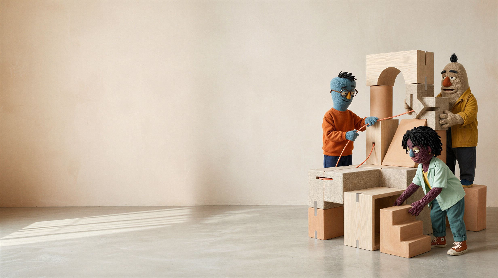
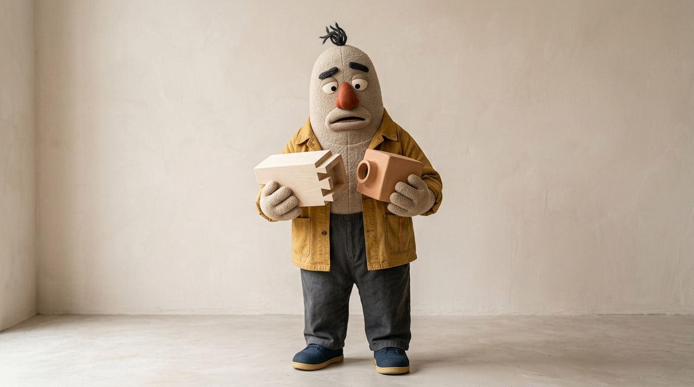
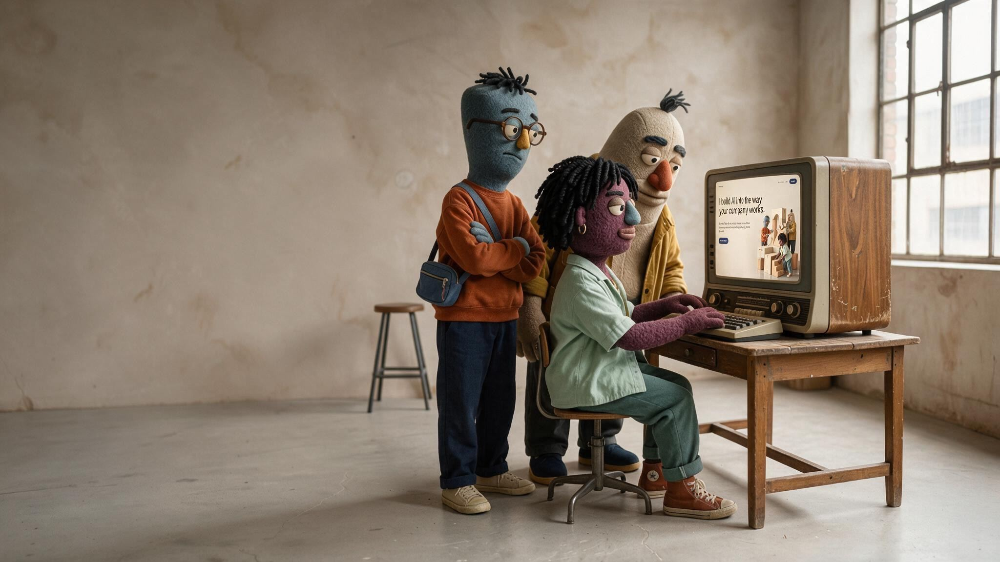
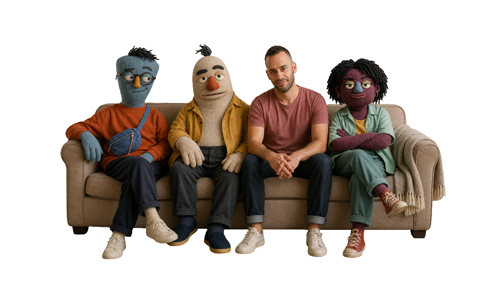

None of them know each other.
More agents just means more to manage.
So you’re stuck holding it all together.

By the way,this website moved
from the creative director
to a copywriter
to a designer,
with the operation lead
overseeing the whole thing.
They’re all agents working from the same context and memory. I stepped in when something needed an actual decision.
Hi, I’m

Father of three (husband of one).
I started my career performing around the world with Mayumana.
Then I moved into tech, joining Kaltura and later Artlist,
where I built and led creative and operations teams.
Creative and engineering always made sense together to me.
So I studied Digital Media at NYU’s School of Engineering.
It wasn’t the obvious choice. I spent years explaining it.
Then AI came along, and the two finally became the same job: understand what a company actually needs, then build the system that makes it possible.
That’s what I do now.
More agents just means more to manage.
So you’re stuck holding it all together.
By the way,this website moved from the creative director to a copywriter to a designer, with the operation lead overseeing the whole thing.
They’re all agents working from the same context and memory. I stepped in when something needed an actual decision.
Hi, I’m
Father of three (husband of one).
I started my career performing around the world with Mayumana. Then I moved into tech, joining Kaltura and later Artlist, where I built and led creative and operations teams.
Creative and engineering always made sense together to me.
So I studied Digital Media at NYU’s School of Engineering.
It wasn’t the obvious choice. I spent years explaining it.
Then AI came along, and the two finally became the same job: understand what a company actually needs, then build the system that makes it possible.
That’s what I do now.